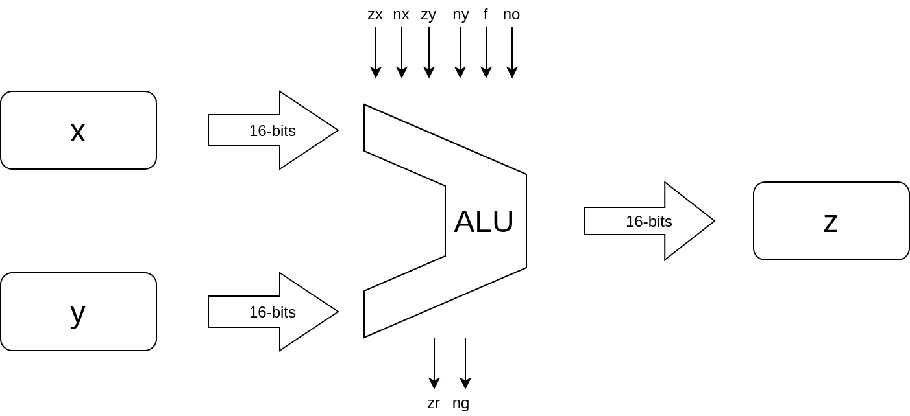
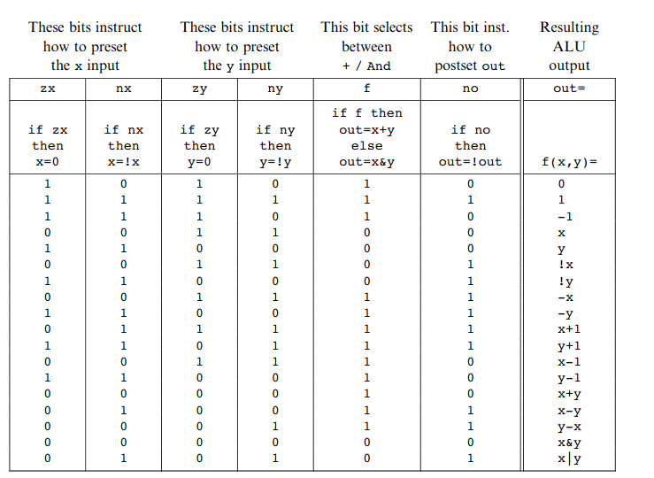

De ALU die je moet maken voor deze opdracht ziet er uit zoals hieronder afgebeeld:

Later zetten we de input status code juist op basis van de binnenkomende instructie en optioneel doen we iets met de output status codes.
De opdracht is om zelf een ALU te maken die aan onderstaande waarheidstabel voldoet, met de volgende entity.

entity alu is
generic(
WIDTH : natural := 16
);
port(
X : IN STD_LOGIC_VECTOR(WIDTH-1 downto 0);
Y : IN STD_LOGIC_VECTOR(WIDTH-1 downto 0);
Z : OUT STD_LOGIC_VECTOR(WIDTH-1 downto 0);
zx : IN STD_LOGIC;
zy : IN STD_LOGIC;
nx : IN STD_LOGIC;
ny : IN STD_LOGIC;
f : IN STD_LOGIC;
no : IN STD_LOGIC;
zr : OUT STD_LOGIC;
ng : OUT STD_LOGIC
);
end entity alu;
Een ALU is volledig combinatorisch.